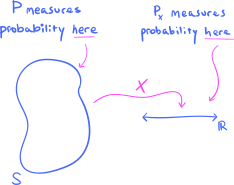

4. Random variables#
4.1. Random variables#
I do not think it is too much of a stretch to say that random variables are the objects that most concern practitioners who use probability and statistics in their work. In this section, I want to give a concrete introduction to these gadgets, saving their precise, mathematical definition for a little later.
As a first example, let’s think about the population that you and I are all members of: The current population \(S\) of the planet Earth. As members of this population, we all have different characteristics, qualities, or features that distinguish us from one another. For example, we all have:
An age.
A country of legal residence.
An annual income (converted to some standard monetary system, like USD or euros).
A primary profession.
etc.
If you’re interested in business, advertising, and sales applications, then you might have a different population \(S\) in mind. For example, your population might be all past customers who have purchased your company’s product, and you might query the various features of this population in order to construct better future advertising campaigns. Can you think of some features of past customers that might be of interest?
Or, your population \(S\) might not even be a population of people; for example, you might work for a manufacturing company, and \(S\) could be the collection of all devices manufactured in the past year. Then, some features of this population might be:
Date of manufacture of the device.
A binary ‘yes’ or ‘no’ depending on whether the device turned out to be defective within a certain time period.
Country of sale.
etc.
Hopefully you can see that this idea of features is very broad, and can be applied in many situations and cases.
All the features mentioned above are also called variables, because they vary across members of the population. For example, we have the ‘age’ variable defined on the population of planet Earth, as well as the ‘primary profession’ variable, and so on. Some of these variables take on numerical values, while others do not; for example, ‘age’ is a numerical variable, while ‘primary profession’ is not. The types of variables that will most interest us (for now) are the numerical ones.
Now, so far nothing about probability has been mentioned. But when the population under consideration is a probability space, it is traditional to refer to variables (or features) of the population as random variables, the word ‘random’ simply reflecting that there is now a probability measure in the mix. The word ‘random’ is perhaps not the best, because for many of us ‘random’ already has such a strong meaning from everyday language. For this reason, sometimes random variables are called stochastic variables, so that we’re not misled in to thinking that there is something “random” about them (there isn’t).
Though the term random variable is common in statistics, the term feature is much more common in the machine learning community. Often, the plain term variable is also used. I will bounce back and forth between these pieces of terminology without explicit mention. But no matter what you call them, they will be very important throughout the rest of this course. In fact, as you will see, the probability spaces that we’ve worked so hard to understand—and which serve as the domains of our random variables—will essentially recede into the background, and the random variables themselves will become the things that we talk about on a daily basis.
Alright, good. We feel like we have an intuitive, concrete understanding of what random variables (or features, or variables) are. They are simply numerical characteristics or qualities of samples points in a probability space. But how might we encode this notion in mathematics? How might we take our intuitive definition of random variable and turn it into a precise mathematical definition?
Let’s return to the sample space \(S\) representing the population of the planet Earth:
{kind=link}
Let’s talk about the ‘annual income’ variable (or feature). We might conceptualize it as a “machine” into which we feed individuals from the population, and then the machine spits out their annual income:
{kind=link}
I’ve given this machine the name \(I\), to stand for Income. We might also be interested in the ‘age’ variable; this leads us to consider another “machine,” this time named \(A\):
{kind=link}
The obsession that mathematicians have with “machines” is because they are concrete and easily understandable metaphors for the more formal notion of a mathematical function. Above, the “machines” \(I\) and \(A\) are simply objects that have inputs and outputs—indeed, both have inputs consisting of people, and the outputs are numbers. But this is exactly what a formal mathematical function is—it’s an object that has inputs and outputs! So, our “machines” above are really none other than functions, in the precise, mathematical sense.
To drive this point home, we might even use functional notation:
{kind=link}
This way of writing things is modelled after the familiar functional notation used in other parts of mathematics:
{kind=link}
Our functions \(I\) and \(A\) may both be written as
This means that the domain of both \(I\) and \(A\) is the population \(S\), while the outputs lie in the set \(\mathbb{R}\) of real numbers.
So, does this mean that a random variable is secretly just a function? Yup! Here’s the definition:
Definition 4.1
Let \(S\) be a probability space. A random variable on \(S\) is a function \(X:S \to \mathbb{R}\).
Therefore, a random variable on a sample space is nothing but a function that takes sample points as inputs, and spits out real numbers. That’s it!
Before we do some practice problems with random variables, let me add a few quick remarks:
It is traditional in probability theory to use capital letters toward the end of the alphabet to name generic random variables, like \(X\), \(Y\), and \(Z\), instead of the more familiar lower case letters like \(f\), \(g\), and \(h\). \(X\).
If a capital letter is used to represent a random variable itself, then the lowercase version of the same letter is often used to represent the generic output of a random variable. So, the functional notation template \(f(x)=y\) that you are familiar with from calculus becomes
\[X(s) = x \quad \text{or} \quad Y(s) = y \quad \text{or} \quad Z(s) = z\]in probability theory.
With all this being said, this ‘capital letter \(=\) random variable’ convention is not always strictly followed, especially if you read other textbooks, research papers, etc. Frankly, struggling through an author’s choice for statistical and probabilistic notation can sometimes be quite a nightmare.
Now:
Problem Prompt
Let’s get some practice with random variables! Do problems 1-4 on the worksheet.
4.2. Probability measures of random variables#
We know that a random variable on a probability space \(S\) is simply a real-valued function
Since \(S\) is a probability space, it comes equipped with a probability measure \(P\), an object which measures the probabilities of events \(A \subset S\). However, the random variable \(X\) “transports” the probability measure \(P\) to a second probability measure that I will denote \(P_X\) (since it depends on \(Y\)) which measures probabilities of events \(A\subset \mathbb{R}\). Here’s a figure to help you remember where each of these probability measures live:
{kind=link}
It is best to introduce these concepts by way of example. So, let’s return to our example of the ‘annual income’ variable \(I\) from the previous section. But because I want you to get used to seeing \(X\) for the name of a random variable, let’s rename \(I\) to \(X\):
And remember, the sample space \(S\) is the current population of the planet Earth.
Now, for (extreme!) simplicity, let’s suppose that there are only four possible annual incomes in the entire population:
The units are thousands of US dollars, so, for example,
means that my annual income (Hi, I’m John) is 35,000 USD. We may group together all individuals in the sample space \(S\) based on their annual incomes:
{kind=link}
I tend to view functions like \(X\) as “active” transformations, so I would picture the action of \(X\) as follows:
{kind=link}
Notice that the variable \(X\), as a function, is carrying certain portions of the sample space to certain values along \(\mathbb{R}\), which I am picturing as a number line.
Let’s now bring in the probability measures. Let’s suppose for the sake of argument that the size of our sample space \(S\) (i.e., the population) is only 32 individuals, and that the probability measure \(P\) on \(S\) is uniform. Thus, the probability of choosing any one person from \(S\) is:
If you count all the little stick people, you will find:
There are 7 people with annual income 35.
There are 8 people with annual income 40.
There are 12 people with annual income 45.
There are 5 people with annual income 50.
Therefore, we compute:
Now, remember that in addition to the probability measure \(P\) on \(S\), there is supposed to be a second probability measure \(P_X\) on \(\mathbb{R}\). It turns out, however, that these previous four probabilities are the probabilities that come from \(P_X\), by definition! Indeed, we define the probability measure \(P_X\) on \(\mathbb{R}\) by setting
for each \(x\in \mathbb{R}\), so that we may rewrite the above equations using \(P_X\) as:
The equation (4.1) is the fundamental bridge that relates the two probability measures \(P\) (on \(S\)) and \(P_X\) (on \(\mathbb{R})\), so make sure that you understand it! (It will reappear below in the abstract definitions.)
The probability measure \(P\) lives on the original probability space \(S\), so we can’t really visualize it since \(S\) doesn’t have a nice linear structure like \(\mathbb{R}\). However, the probability measure \(P_X\) lives on \(\mathbb{R}\), so we can visualize it using a probability histogram:
{kind=link}
The heights of the bars above each numerical value in \(\mathbb{R}\) represent the probabilities measured by \(P_X\).
Ok. Having worked our way through a concrete example, we are now ready for the abstract definitions.
Definition 4.2
Let \(X:S\to \mathbb{R}\) be a random variable on a probability space \(S\) with probability measure \(P\). We define the probability measure of \(X\), denoted \(P_X\), via the formula
for all events \(A\subset \mathbb{R}\).
For a given event \(A\subset \mathbb{R}\), notice that the set
inside the probability measure on the right-hand side of (4.2) consists exactly of those sample points \(s\in S\) that land in \(A\) under the action of the random variable \(X\); I would visualize this as:
{kind=link}
Alternate notation
In the mathematical theory of probability, the notation \(P_X\) is very common for the probability measure induced by \(X\). However, in elementary statistics it is much more common to write
and
and
In deference to tradition, I will use these alternate notations almost always.
However, I want to point out the following:
Do notice that these alternate notations are actually misuses of notation, since the expressions “\(X\in A\)”, “\(X=x\)”, and “\(a\leq X \leq b\)” are complete nonsense. Indeed, remember that \(X\) is a function, while \(x\) is a number, so there is no way that \(X\) could be equal to \(x\), since they are different types of objects!
In the alternate notation, notice that the single letter \(P\) is used to denote both the original probability measure on \(S\) and the second probability measure of \(X\) on \(\mathbb{R}\). This might make you think that there is only one probability measure in play, but remember that there are actually two, and they live on different probability spaces!
Now:
Problem Prompt
Let’s practice! Have a go at problems 5-7 on the worksheet.
4.3. Discrete and continuous random variables#
Two types of random variables will be the ones that are most frequently encountered in this class. Their definitions follow below. Before reading them, however, it might be worth reviewing our discussions of discrete and continuous probability measures in Sections 2.6 and 2.8.
Definition 4.3
Let \(X:S\to \mathbb{R}\) be a random variable.
We shall say \(X\) is discrete if there exists a function \(p:\mathbb{R} \to \mathbb{R}\) such that
\[\begin{equation*} P(X\in A) = \sum_{x\in A} p(x) \end{equation*}\]for all events \(A\subset \mathbb{R}\). In this case, \(p(x)\) is called the probability mass function of \(X\).
We shall say \(X\) is continuous if there exists a function \(f:\mathbb{R} \to \mathbb{R}\) such that
\[\begin{equation*} P(X\in A) = \int_A f(x) \ \text{d} x \end{equation*}\]for all events \(A\subset \mathbb{R}\). In this case, \(f(x)\) is called the probability density function of \(X\).
Notice that a random variable \(X\) is discrete if and only if its probability measure \(P_X\) is discrete in the sense defined in Section 2.6, while it is continuous if and only if \(P_X\) is continuous in the sense defined in Section 2.8.
Problem Prompt
Let’s get some practice recognizing discrete and continuous random variables, and computing some of their probability measures. Do problems 8 and 9 on the worksheet.
As I mentioned, discrete and continuous random variables will be the only types of random variables that we work with in this class—at least in problems where we need to compute things. As we continue, you will notice the contrast in the definition above, where discrete random variables involve summations \(\sum\) and continuous random variables involve integrals \(\int\), will be replicated over and over again. This is another good intuition to have in mind for these two types of random variables: The discrete random variables are those in which you “add things” to compute various quantities, whereas continuous random variables are those in which you must “integrate things.”
4.4. Distribution and quantile functions#
If \(X\) is any type of random variable (discrete, continuous, or neither), then its probability measure \(P_X\) lives on \(\mathbb{R}\). As such, it has both distribution and quantile functions. We studied these latter types of functions in Section 2.10. But in case you forgot their definitions, we review them in this section in the context of random variables.
Definition 4.4
Let \(X\) be a random variable. The distribution function of \(X\) is the function \(F:\mathbb{R} \to \mathbb{R}\) defined by
In particular:
If \(X\) is discrete with probability mass function \(p(x)\), then
\[\begin{equation*} F(x) = \sum_{y \leq x} p(y), \end{equation*}\]where the sum ranges over all \(y\in \mathbb{R}\) with \(y\leq x\).
If \(X\) is continuous with density function \(f(x)\), then
\[\begin{equation*} F(x) = \int_{-\infty}^x f(y) \ \text{d} y. \end{equation*}\]
And here’s the definition of quantile functions:
Definition 4.5
Let \(X\) be a random variable with distribution function \(F:\mathbb{R} \to [0,1]\). The quantile function of \(X\) is the function \(Q: [0,1] \to \mathbb{R}\) defined so that
In other words, the value \(x=Q(p)\) is the smallest \(x\in \mathbb{R}\) such that \(p\leq F(x)\).
The value \(Q(p)\) is called the \(p\)-th quantile of \(X\).
The quantile \(Q(0.5)\) is called the median of \(X\).
Even though we had considerable practice with distribution and quantile functions in Section 2.10, it won’t hurt to do another practice problem:
Problem Prompt
Do problem 10 on the worksheet.
4.5. Expected values#
You should review problem 6 from the worksheet if it isn’t already fresh in your mind. In that problem, we saw the discrete random variable
We saw that the probability measure of \(X\) is described by the following probability histogram:
Show code cell source
import matplotlib.pyplot as plt
import numpy as np
import scipy as sp
from itertools import product
import matplotlib as mpl
plt.style.use('../aux-files/custom_style_light.mplstyle')
mpl.rcParams['figure.dpi'] = 600
support = [2, 3, 4, 5]
probs = [0.1, 0.2, 0.3, 0.4]
plt.bar(support, probs, width=0.25)
plt.xlabel('x')
plt.ylabel('probability')
plt.tight_layout()

Given this information, I want to ask: What is the mean (i.e., average) value of \(X\)? You might say: “Well, the range of \(X\) consists of the numbers \(2,3,4,5\), so the mean value of \(X\) is just the mean of these four numbers:”
But this is wrong!
Don’t believe me? Let’s have the computer randomly draw two balls and record the value of \(X\). Then, let’s have the computer place the balls back into the urn, and then repeat the procedure, recording another (possibly different) value of \(X\). Each time the computer draws a pair of balls we will call a trial. Let’s have the computer complete, say, \(n=10\) trials, and then have it compute the mean of the \(n=10\) values of \(X\). This produces a mean value of \(X\) over \(n=10\) trials.
But why stop with a mean value of \(X\) over only \(n=10\) trials? Why not let \(n\) get bigger? What’s the mean value of \(X\) over \(n=50\) trials, \(n=100\) trials, or even \(n=200\) trials? Answer:
Show code cell source
np.random.seed(42)
sizes = range(1, 201)
means = [np.mean(np.random.choice(support, size=n, p=probs)) for n in sizes]
plt.plot(sizes, means)
plt.xlabel('$n=$number of trials')
plt.ylabel('mean value of $X$')
plt.axhline(y=4, color='red', linestyle='--')
plt.tight_layout()

As you can see, the mean values of \(X\) appear to stabilize near \(4\) (not \(3.5\)!) as the number of trials increases. And it is this theoretical limiting value of \(4\) that we will call the true mean value of the random variable \(X\).
Then, here’s the central question:
Q: How could we have computed this (theoretical, limiting) mean value without resorting to a computer simulation?
The answer is surprisingly easy. First, let’s take a look at the wrong mean value that we computed above:
The expression on the right-hand side is called a weighted sum of the numbers \(2,3,4,5\), because it is the sum of these four numbers, but there are (multiplicative) weights placed on each of them, namely the number \(1/4\). Notice that there are four \(1/4\)’s appearing in the weighted sum, and that
We interpret these four \(1/4\)’s as the uniform probability measure on the range \(2,3,4,5\), where each of these four numbers gets a probability of \(1/4\). Therefore, the wrong mean value computed above is wrong simply because it uses the wrong probability measure! The probability measure on the range of \(X\) is not uniform, rather, it is given by the values in the probability histogram from above:
Show code cell source
plt.bar(support, probs, width=0.25)
plt.xlabel('x')
plt.ylabel('probability')
plt.tight_layout()
So, what happens if we substitute the correct probability measure into the weighted sum? Here it is:
And just like that, we get the correct answer!
Just by looking at the probability histogram of \(X\), you can see that the mean value must be bigger than \(3.5\) (which lies smack in the middle of the histogram). This is because the probability measure of \(X\) has more “probability mass” concentrated on the right-hand side of the histogram, which will “pull” the mean value in that direction. In other words, the values of \(X\) on the right-hand side of the histogram have more “weight” and thus contribute more to the mean value. Here’s a plot of the probability histogram again, but with a vertical line representing the mean value:
Show code cell source
expected_val = sum([x * p for x, p in zip(support, probs)])
plt.bar(support, probs, width=0.25)
plt.axvline(x=expected_val, color='red', linestyle='--')
plt.xlabel('x')
plt.ylabel('probability')
plt.tight_layout()

Let me give you four more random variables, \(X_1\), \(X_2\), \(X_3\), and \(X_4\), along with their probability histograms and vertical lines representing their mean values:
Show code cell source
params = [[(2, 6), (6, 2)], [(0.1, 0.1), (2, 2)]]
support = np.linspace(0.1, 0.9, 9)
_, axes = plt.subplots(ncols=2, nrows=2, sharey=True, figsize=(10, 6))
for i, j in product(range(2), repeat=2):
a = params[i][j][0]
b = params[i][j][1]
X = sp.stats.beta(a, b)
probs = np.array([X.pdf(x) for x in support])
probs = probs / np.sum(probs)
expected_val = sum([x * p for x, p in zip(support, probs)])
axes[i, j].bar(support, probs, width=0.05)
axes[i, j].set_xticks(support)
axes[i, j].axvline(x=expected_val, color='red', linestyle='--')
axes[i, j].set_ylabel('probability')
axes[0, 0].set_xlabel('$X_1$')
axes[0, 1].set_xlabel('$X_2$')
axes[1, 0].set_xlabel('$X_3$')
axes[1, 1].set_xlabel('$X_4$')
plt.tight_layout()

Notice that the mean values of the random variables \(X_1\) and \(X_2\) in the first row are “pulled” in the direction of higher “probability mass,” while the mean values of \(X_3\) and \(X_4\) in the second row lie on the “axes of symmetry” of the probability distributions. Think of the mean value of a random variable as the “center of mass” of its probability distribution.
Before giving you the precise definitions, you need to know that mean values are also called expected values. (Quantum physicists also call them expectation values.) So, in the official, technical lingo, what we were computing above was the expected value of the random variable \(X\).
Definition 4.6
Let \(X\) be a random variable.
If \(X\) is discrete with probability mass function \(p(x)\), then its expected value, denoted \(E(X)\), is the sum
(4.3)#\[ E(X) = \sum_{x\in \mathbb{R}} x\cdot p(x). \]If \(X\) is continuous with probability density function \(f(x)\), then its expected value, denoted \(E(X)\), is the integral
\[ E(X) = \int_{\mathbb{R}} x\cdot f(x) \ \text{d} x. \]
In both cases, the expected value \(E(X)\) is also often called the mean value of \(X\) (or just mean) and denoted \(\mu_X\) or just \(\mu\).
Here we see the “sum vs. integral” dichotomy between discrete and continuous random variables that we saw in previous sections.
Now, the sum \(\sum_{x\in \mathbb{R}}\) in (4.3) simply means that we are adding up all terms of the form \(x\cdot p(x)\), as \(x\) ranges over all real numbers in \(\mathbb{R}\). But remember, the random variable \(X\) is assumed to be discrete, so there are actually either only finitely many \(p(x)\)’s that are nonzero—in which case the sum is actually finite—or there are a countable infinity that are nonzero—in which case the sum is of the form \(\sum_{n=1}^\infty\). In the latter case, there is the possibility that the expected value \(E(X)\) doesn’t exist, because the infinite series doesn’t converge. However, at this level, except for a few special cases, we won’t worry about such things. We shall always assume in this class that the infinite series converge and all our expected values exist. Even more, we shall assume that the series converge absolutely, which you might(?) remember means that the series of absolute values
converges. One byproduct of absolute convergence is that the order of the summands in the infinite series doesn’t matter; if you’ve taken real analysis and have studied rearrangements, this might sound familiar to you. If not, don’t worry about it.
Likewise, in the continuous case there is the possibility that \(E(X)\) doesn’t exist, in the sense that the improper integral
doesn’t converge. But as in the discrete case, we won’t worry about these situations.
Problem Prompt
Do problems 11-15 on the worksheet.
4.6. The algebra of random variables#
Remember that, technically, random variables are functions. But as you will see as you go through your training in probability and statistics, we often want to treat them as if they were numbers and add and subtract them, multiply and divide them, and even plug them into functions like we would a numerical variable. In short: We want to develop an algebra of random variables.
Let’s see how this works in the case of addition of random variables. Given two random variables
on a probability space \(S\), we ask: What should the sum \(X+Y\) be? Well, it should itself be a random variable on \(S\), so, in particular, it needs to be a function
To evaluate \(X+Y\) at a sample point \(s\in S\), the most natural thing to do is to add the corresponding outputs of \(X\) and \(Y\), i.e., to define
This addition operation on random variables is called the pointwise sum.
Yikes. This seems overly complicated. But it’s pretty easy to bring down to earth if we imagine for simplicity that \(X\) and \(Y\) are discrete random variables defined on a finite sample space. For example, suppose that
Then, suppose that the outputs of \(X\) and \(Y\) are given by the values in the table:
Thus, for example, we have \(X(1) = -1\) and \(Y(4) = 3\). We obtain the pointwise sum \(X+Y\) defined by (4.4) simply by adding the corresponding outputs of \(X\) and \(Y\), which is essentially just the rowwise sum:
Ok, cool. So we’ve defined \(X+Y\) as a function on \(S\). But remember, \(X+Y\) is supposed to be a random variable, so it’s supposed to have a probability measure. We will compute it in:
Problem Prompt
Do problem 16 on the worksheet.
In general, given the probability measures of arbitrary random variables \(X\) and \(Y\), it can be difficult to compute the probability measure of \(X+Y\) except in very special cases.
You saw the pointwise product \(XY\) in problem 16 on the worksheet. I bet you can guess the definition of the pointwise difference \(X-Y\) and pointwise quotient \(X/Y\) (watch out for when \(Y=0\) in the latter!). Moreover, given a constant \(c\in \mathbb{R}\), there is also a very natural definition of \(cY\), where \(Y\) is a random variable; indeed, it is given pointwise by
Taking \(c=4\) in the example above, we have:
It thus appears that the pointwise scaling operation (4.5) is just columnwise scaling.
So there we have it: We now have an algebra of random variables. Easy enough. But be aware that if your random variables are continuous, then we obviously cannot represent them via a finite table of values like we did above, and perform rowwise and columnwise operations. In this case, your only option is to resort to the defining equations for the algebraic operations:
\((X\pm Y)(s) = X(s) \pm Y(s)\),
\((XY)(s) = X(s) Y(s)\),
\((X/Y)(s) = X(s)/Y(s)\), when \(Y(s)\neq 0\),
for \(s\in S\).
4.7. Functions of random variables#
In addition to an algebra of random variables, I mentioned at the beginning of the previous section that we will want to plug random variables into functions, just like we would numerical variables. It’s difficult to convey at this early stage exactly why we would want to do this, but I encourage patience. You’ll see soon enough how often this procedure is used!
To see how this works, let’s suppose a random variable \(X\) is defined on a finite sample space \(S=\{1,2,3,4\}\) with:
Now, consider the good ol’ quadratic function \(g(x) = x^2\). How should I make sense of \(g(X) = X^2\)?
First, notice that the expression \(g(X)\) technically doesn’t make any sense. This is because \(X\) is a function, while the domain of \(g\) is a set of numbers, so mathematically speaking you cannot plug \(X\) into \(g\) since \(X\) is not in the domain of \(g\). Instead, what \(g(X)\) really represents is the composite function \(g\circ X\) which is a legitimate function on \(S\) like any random variable is supposed to be.
Given this interpretation, how would we actually compute \(g(X) = X^2\) given the table of values above? Easy! Simply apply the squaring function \(g(x) = x^2\) rowwise to each output of \(X\):
While this is pretty straightforward in the case that \(X\) is defined on a finite probability space, in the case that \(X\) is continuous, we cannot compute \(g(X)\) using a finite table of values. In this case, you must resort to the definition:
Now:
Problem Prompt
Have a go at problem 17 on the worksheet.
4.8. Expectations of functions of random variables and the LotUS#
In the next two sections, we list some of the most useful properties of expectations of functions of random variables. Two such properties will be of particular importance: The first is encoded in something called the “Law of the Unconscious Statistician,” which we will talk about in this section, while the second property is called linearity and will be discussed in the next section.
Here’s the situation: Suppose we have a discrete random variable \(X:S\to \mathbb{R}\) on a probability space, and a real-valued function \(y=g(x)\) on \(\mathbb{R}\). As I explained above, we can “plug \(X\) into \(g\),” obtaining the “transformed” random variable \(Y = g(X)\) which is really the composite \(g\circ X\) in disguise. The goal in this section is to derive a formula for the expected value \(E(Y) = E(g(X))\).
Now, by definition, this expected value is given by the formula
However, if you weren’t paying close attention and were mindlessly and unconsciously computing things, you might be tempted by the (valid!) equations \(Y = g(X)\) and \(y=g(x)\) to compute this expected value by
It could happen, right?
But you need to notice that it is not obvious that the expression on the right-hand side of (4.7) correctly computes the expected value \(E(Y) = E(g(X))\). For one, notice that the sum in (4.7) iterates over all \(x\in \mathbb{R}\), and that these values are inserted into \(g\) to obtain \(y=g(x)\). But there is no reason to believe that you obtain all values of \(y\in \mathbb{R}\) in this way, and yet this is what the correct formula (4.6) demands.
So, you see there is no obvious reason why the two formulas (4.6) and (4.7) should be the same. And yet, if you mistakenly compute \(E(Y) =E(g(X))\) using (4.7) and then return later in a panic to re-do your computations using (4.6), you’ll find that they were right the entire time! This is because these two formulas secretly are the same, but exactly why they are equal is not obvious.
The fact that the formula (4.7) correctly computes the expected value \(E(Y) = E(g(X))\) is called the “Law of the Unconscious Statistician,” named in honor of all those unconscious statisticians who believe the formulas (4.6) and (4.7)are obviously the same thing!
Now, let me begin to explain why (4.7) correctly computes the expected value by drawing a few pictures. First, remember that \(Y=g(X)\) is a real-valued function on \(S\) like any other, so I would picture it like this:
{kind=link}
In the definition (4.6) of \(E(g(X))\), notice that we must compute the probabilities
for each \(y\in \mathbb{R}\). This probability is precisely the probability of the set in \(S\) consisting of those sample points \(s\) that “hit” \(y\) when mapped via \(g(X)\). I have shaded this set in:
{kind=link}
It could be that there are actually no sample points in \(S\) that “hit” \(y\); in this case, the shaded set in \(S\) is empty, and the probability (4.8) is \(0\).
Now, remember also that \(g(X)\) technically stands for the composite function \(g\circ X\), so on its way from \(S\) to \(\mathbb{R}\) (left to right), the random variable \(g(X)\) first takes a detour through \(X\) and another copy of \(\mathbb{R}\):

If we bring back our point \(y\in \mathbb{R}\) from above, this means that the points in \(S\) that “hit” \(y\) must also first take a detour through \(X\):
{kind=link}
The collection of shaded “intermediate points” in the diagram is denoted \(g^{-1}(y)\) and is called the preimage of \(y\) under \(g\); in set notation:
Now, any sample point \(s\in S\) that “hits” \(y\) under the function \(g(X)\) must have the property that \(X(s) \in g^{-1}(y)\). That makes sense, right? If \(s\) “hits” \(y\), then it must first “hit” one of the shaded “intermediate points” in the preimage \(g^{-1}(y)\) in the last picture.
If we suppose that there are only three points \(x_1\), \(x_2\), and \(x_3\) in the preimage \(g^{-1}(y)\) (so that the picture is accurate), then each of the three shaded sets in \(S\) can be labelled as follows:
{kind=link}
Therefore, we have the equation of sets
There’s a lot going on in this equality, so make sure that you pause and ponder it for a while if you need to.
But it might be the case that the preimage \(g^{-1}(y)\) doesn’t consist only of three \(x\)-values; indeed, it could even contain infinitely many values! Since I don’t know ahead of time how many points it contains, it is better to rewrite (4.9) as
This looks like a more complicated equality, but the intuition behind it is exactly the same as (4.9).
If I now apply the probability measure \(P\) to both sides of this last equality (4.10), and use the fact that the union on the right-hand side is disjoint, I get:
Now, it turns out that this is the key equality for unlocking the proof of the Law of the Unconscious Statistician. There are two versions of this law, one for discrete random variables and the other for continuous ones. Let’s formally state the law before I continue with the proof:
Theorem 4.1 (Law of the Unconscious Statistician (LotUS))
Let \(X\) be a random variable and \(g:\mathbb{R}^2 \to \mathbb{R}\) a function.
If \(X\) is discrete with mass function \(p(x)\), then
\[ E(g(X)) = \sum_{x\in \mathbb{R}} g(x)\cdot p(x). \]If \(X\) is continuous with density function \(f(x)\), then
\[ E(g(X)) = \int_{\mathbb{R}} g(x) \cdot f(x) \ \text{d} x. \]
We will only prove the result in the case that \(X\) is discrete. And in view of the work we did above, the proof is easy: Beginning with the definition (4.6) of \(E(g(X))\) and using (4.11), we compute:
where the last equality follows from the observation that \(g(x)=y\) if \(x\in g^{-1}(y)\).
Et voilà! Just like that, we’ve proved the LotUS by simply drawing a bunch of pictures (at least in the discrete case)! Now try the following:
Problem Prompt
Do problems 18 and 19 on the worksheet.
4.9. Linearity of expectation#
We’ve learned that if \(X\) and \(Y\) are two random variables, then their pointwise sum \(Z=X+Y\) is also a random variable. In the discrete case, we may compute the expectations of \(X\) and \(Y\), respectively, via the definition as
How would we compute the expectation of the sum \(Z = X+Y\)? By definition, it would be
But it is not clear at first glance that there is any sort of simple relationship between the three expectations in (4.12) and (4.13). Nevertheless, as I will explain in a later chapter—after we’ve learned about joint distributions—these expectations are related through the first equation in:
Theorem 4.2 (Linearity of Expectation)
Let \(X\) and \(Y\) be two random variables and let \(c\in \mathbb{R}\) be a constant. Then:
and
You couldn’t possibly hope for any simpler relationship than (4.14)! But as I just mentioned, I can’t yet explain why this equation holds. The explanation will come later, in the form of Theorem 8.3.
However, we can prove (4.15) quite easily: Just use the LotUS with the function \(g(x) = cx\). Can you supply the details to this argument?
Now, even though we can’t prove (4.14) at this point, we won’t need it quite yet, so we’re not in any danger. Instead, the following “weak” form of linearity is all we need. (For convenience, I’ve taken the identity (4.15)—which you just proved—and included it in this special case.)
Theorem 4.3 (“Weak” Linearity of Expectation)
Let \(X\) be a discrete or continuous random variable, let \(y=g_1(x)\) and \(y=g_2(x)\) be two real-valued functions, and let \(c\in \mathbb{R}\) be a constant. Then:
and
This “weak” form of linearity is a simple application of the LotUS. To see this, first define the real-valued function \(y=g(x)\) by setting
for each \(x\). Then \(g(X) = g_1(X) + g_2(X)\), and an application of the LotUS (in the continuous case) gives:
Can you see exactly where I used the LotUS? And can you adapt this argument on your own to cover the discrete case?
We need just one more fact before proceeding to practice problems. To state it, observe that any constant \(c\in \mathbb{R}\) may be considered a random variable. Indeed, it may be identified with the unique random variable that sends the entire sample space to the constant \(c\):
{kind=link}
Thus, every constant \(c\in \mathbb{R}\) may be considered a constant random variable. Your intuition would then suggest that the mean value of a constant random variable should be pretty easy to compute. And you’d be right!
Theorem 4.4 (Expectations of Constants)
Let \(c\in \mathbb{R}\) be a constant, viewed as a constant random variable. Then \(E(c) = c\).
To see why \(E(c) = c\) holds, simply note that
since
Now:
Problem Prompt
Do problem 20 on the worksheet.
4.10. Variances and standard deviations#
The last few sections were quite technical, packed with all sorts of definitions, formulas, and equations. But we now return to the same circle of ideas that we used to motivate the definition of the expected value of a random variable \(X\): It is precisely the “mean value” of \(X\), and if we think physically, it is the “center of mass” of the probability distribution of \(X\). As such, it provides a rough description of the “shape” of the distribution, telling us where the majority of the “probability mass” is centered. In fact, for this reason, the expected value of \(X\) is often called a measure of centrality.
In this section, we study two so-called measures of dispersion, or measures of spread. To motivate them, first consider the following two possible probability distributions for a discrete random variable \(X\):
Show code cell source
params = [(10, 10), (2, 2)]
support = np.linspace(0.1, 0.9, 9)
_, axes = plt.subplots(nrows=1, ncols=2, sharey=True, figsize=(8, 3))
for i in range(2):
a = params[i][0]
b = params[i][1]
X = sp.stats.beta(a, b)
probs = np.array([X.pdf(x) for x in support])
probs = probs / np.sum(probs)
expected_val = sum([x * p for x, p in zip(support, probs)])
axes[i].bar(support, probs, width=0.05)
axes[i].set_xticks(support)
axes[i].axvline(x=expected_val, color='red', linestyle='--')
axes[i].set_ylabel('probability')
axes[0].set_xlabel('$y$')
axes[1].set_xlabel('$y$')
plt.tight_layout()

Notice that both probability distributions have the same expected value \(\mu = 0.5\), as indicated by the two vertical lines. But the second distribution is clearly more dispersed—or “spread out”—as compared to the first.
Q: How might we measure the spread of these distributions?
Here’s one way. Imagine choosing random numbers in the range of \(X\), which according to the histograms above, is equal to the set
If you choose these numbers according to the left-hand distribution, then on average, your numbers should be relatively close to the mean value \(\mu=0.5\). On the other hand, if you choose these numbers according to the right-hand distribution, then on average, your numbers would likely spend more time further away from the mean value \(\mu=0.5\). So, what we’re really talking about is the average distance from the mean.
Now, if \(x\) is one of your chosen numbers in the range of \(X\), then its distance to the mean is \(|x - \mu|\). (The absolute value bars ensure that this distance is always non-negative, as any distance should be.) Thus, a measure of dispersion of the distributions would be the mean values of the distances \(|x-\mu|\), as \(x\) varies over the range of \(X\). But expected values are mean values, and so this suggests that a good measure of dispersion would be the expected value
In fact, if I compute these expected values for the two probability measures above, I get:
So, according to the dispersion measure (4.16), the right-hand distribution is, in fact, more spread out than the left-hand distribution. This is precisely what we expected!
But while (4.16) is a perfectly good measure of dispersion, for certain technical reasons it is not the one most often used. (For example, the function \(g(x) = |x-\mu|\) is not differentiable at \(x=\mu\), which can complicate some things.) Instead, we don’t look at the average actual distance to the mean, rather we look at the average squared distance to the mean:
Definition 4.7
Let \(X\) be a random variable with expected value \(\mu = E(X)\). The variance of \(X\), denoted \(V(X)\), is given by
The variance of \(X\) is also denoted \(\sigma^2_X\) or just \(\sigma^2\).
As with expected values, there is the question of whether the variance actually exists. Moreover, technically we have only defined expected values for discrete and continuous random variables, so I should insert those qualifiers in the definition. But we don’t worry about these technicalities at this level.
One of the advantages that the variance (4.17) has over (4.16) is that the quadratic function \(g(x) = (x-\mu)^2\) is nice and smooth, whereas the absolute value function \(g(x) = |x-\mu|\) is not. Further differences can be uncovered by considering the graphs of these two functions: The first gives more weight to \(x\)-values far away from \(\mu\) as compared to the second, while it gives less weight to \(x\)-values close to \(\mu\) as compared to the second. (Draw the graphs!) These types of considerations are important when one studies loss, cost and error functions.
Due to the squaring operation, the units of the variance \(V(X)\) are the units of \(X\) squared. This is sometimes undesirable—for example, if \(X\) is measured in degrees Fahrenheit, then \(V(X)\) is measured in degrees Fahrenheit squared. So, in order to compare apples to apples, sometimes it is more useful to consider the following related measure of dispersion:
Definition 4.8
Let \(X\) be a random variable. The standard deviation of \(X\), denoted \(\sigma_X\) or just \(\sigma\), is the positive square root of the variance:
Let’s compute a few variances and standard deviations straight from the definitions:
Problem Prompt
Do problems 21-23 on the worksheet.
Sometimes the following formula can shorten computations:
Theorem 4.5 (Shortcut Formula for Variance)
Let \(X\) be a random variable. Then
Why is this formula true? Here’s why:
Go through these computations, line by line, and see if you can identify which properties of expectations I used! Be very careful in identifying them!
Now, given a function \(g(X)\) of a random variable \(X\), the LotUS gives a very simple way to compute the expectation \(E(g(X))\). We might wish for something similar for variances, but unfortunately things aren’t so simple in general. However, if the function \(g(x)\) is a so-called affine transformation of the form
where \(a\) and \(b\) are constants, then we can say something in general:
Theorem 4.6 (Variance of an Affine Transformation)
Let \(X\) be a random variable and \(a\) and \(b\) constants. Then
Why is this formula true? Here’s why:
Again, make sure you can pick out exactly what properties of expectations and variances I used in moving from line to line.
Problem Prompt
Holy smokes. After a very, very long discussion of random variables, we’ve finally reached the end! Now finish off the worksheet and do problems 24 and 25.